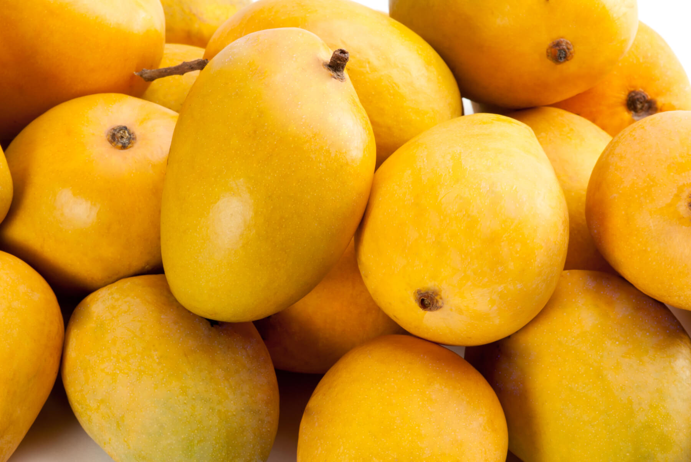

About Mango
A mango is an edible stone fruit produced by the tropical tree Mangifera indica which is
believed to have originated from the region between northwestern Myanmar, Bangladesh, and
northeastern India.M. indica has been cultivated in South and Southeast Asia since ancient
times resulting in two distinct types of modern mango cultivars: the "Indian type" and the
"Southeast Asian type". Other species in the genus Mangifera also produce edible fruits
that are also called "mangoes", the majority of which are found in the Malesian ecoregion.
Worldwide, there are several hundred cultivars of mango. Depending on the cultivar, mango fruit
varies in size, shape, sweetness, skin color, and flesh color which may be pale yellow, gold,
green, or orange.Mango is the national fruit of India, Pakistan and the Philippines,
while the mango tree is the national tree of Bangladesh.
Condition to Mango :-
-
Type of soil require
Mango can be grown on a variety of soils. Poorly drained soils should be avoided. It does
not perform well in soils with pH more than 7.8. Alluvial soils with good amount of organic
matter and soil pH between 6.5 to 7.5 are best suited for mango orchards.
Mango thrives well up to 600 m above mean sea level provided locality is frost free and
there is no high humidity or rains during flowering.
The favourable temperature is 240 C to 270 C, however, it can tolerate temperature as high
as 480 C provided that trees are getting regular irrigation.
Mango has been found to grow on a wide range of soils. However, deep and well-drained loam
to sandy loam soils are most suitable for cultivation.
Heavy black cotton, saline and alkaline soils should be avoided. The deal range of soil pH
for mango cultivation is 5.5 to 7.5.
-
Climate
Mango is a tropical fruit but is successful in sub-tropical conditions. At the time of
flowering the occurrence of frost and rain is harmful. The most suitable temperature for the
growth of mango is 22 – 27°C. Rains at fruit maturity are beneficial for the improvement of
fruit size and quality.
Mango can be grown on a wide range of soils from alluvial to laterite provided they are deep
(minimum 6') and well drained. It prefers slightly acidic soils (pH 5.5 to 7.5)
-
Irrigation
Young plants are watered frequently for proper establishment. In case of grown up trees,
irrigation at
10 to 15 days interval from fruit set to maturity is beneficial for improving yield.
However, irrigation
is not recommended for 2-3 months prior to flowering as it is likely to promote vegetative
growth at
the expense of flowering.
Fruit drop is reduced and fruit size is increased with winter watering. The guava crop
benefits greatly from drip irrigation. It saves up to 60% of water and increases the number
and size of fruits significantly.
-
Manuring & Fertilization
Fertilizer numbers show the ratio by weight of the main plant nutrients nitrogen (N),
phosphorus (P) and potassium (K). This ratio is expressed in the number on the package, such
as 10-10-10, meaning 10 percent of each of those three nutrients. Slow-release fertilizers
are granules coated with polymer or sulfur that take 8 to 12 weeks to dissolve into the
soil. Soluble rapid-release fertilizers, generally less expensive than slow-release
fertilizers, enter the soil immediately with watering. A complete fertilizer is one that
contains all N, P and K. Chelated iron and other minerals mean they are more capable of
being absorbed by the mango roots.